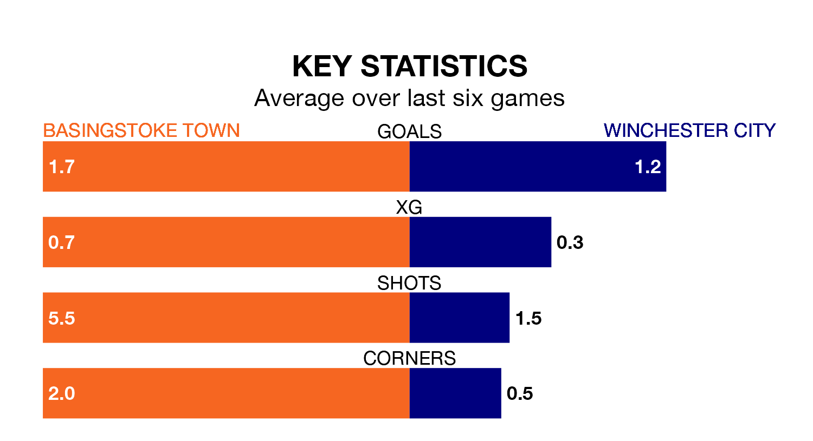

Winchester City make the journey to play Basingstoke Town on Saturday looking to pick up points to end their three-game losing streak.
Winchester's struggles have left them with just three points from their last six Southern League Premier – South matches, while their opponents have earned eight from a possible 18.
With 53 goals in 29 games so far this season, Basingstoke are the league's joint-second-highest scorers with 1.8 goals per game. But they are conceding more than average too, letting in 66 goals at a rate of 2.3 per game.
Winchester, meanwhile, are average scorers, with 1.7 goals per game. They have conceded 1.8 goals per game.
City are 13th in the table after 24 games, of which they have won eight and drawn eight, earning 32 points.
Town are one place ahead of the away team in 12th, with nine wins and seven draws putting them on 34 points.
Basingstoke's last match was on January 20, a 3-2 win against Tiverton Town.
Winchester lost 2-1 against Didcot Town last time out, on Tuesday.
Updated: 09:07 (UTC), 24/01/24